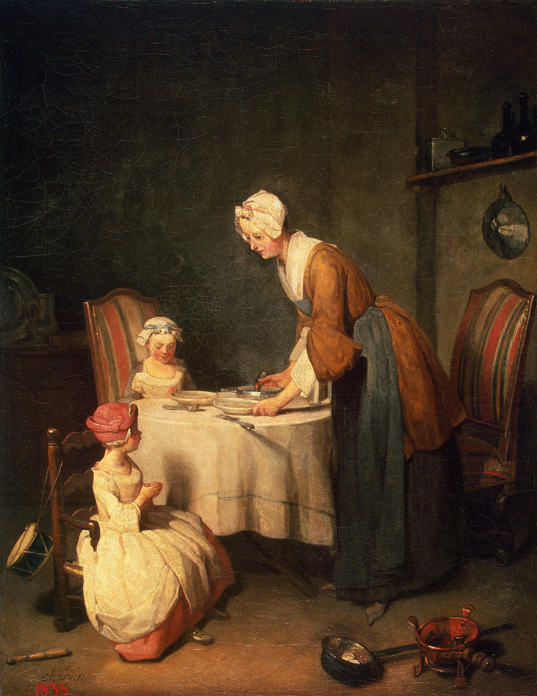

Молитва перед обедом
Картина "Молитва перед обедом" несет в себе многие черты сентиментализма, в частности, поучительность сюжета. Однако в картине соединяются два стиля - рококо и сентиментализм. Здесь поднимается тема важности женского участия в воспитании у детей возвышенных чувств. Стиль рококо оставил след в построении изящной композиции, множестве мелких деталей, богатстве цветовой палитры. Позы героев, предметы, вся обстановка комнаиты изящны, что характерно для живописи того времени.